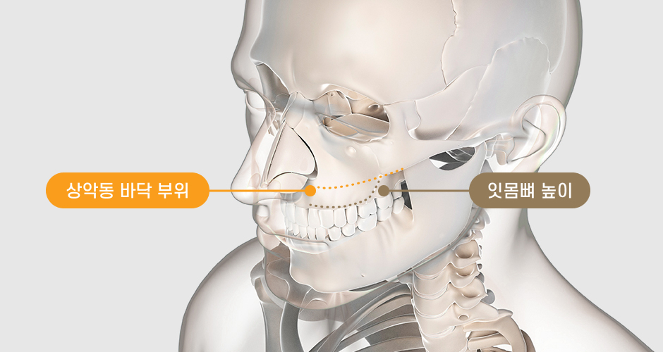
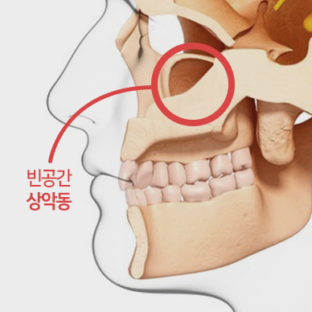
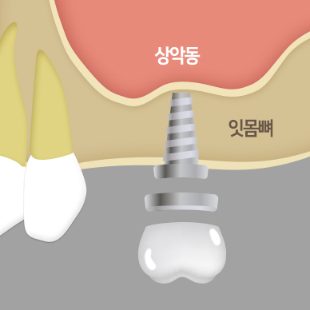
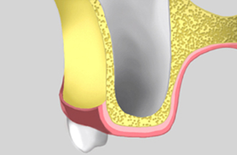
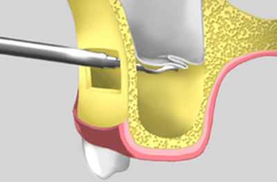
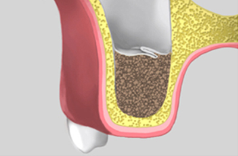
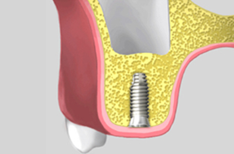
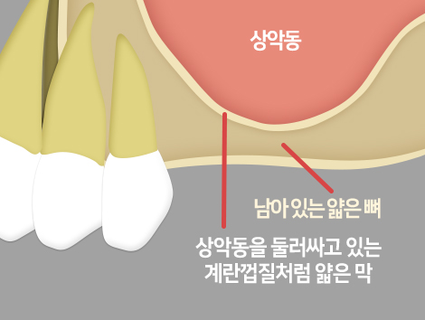
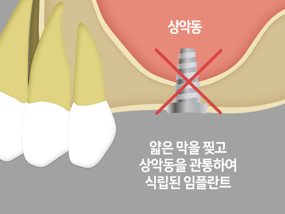
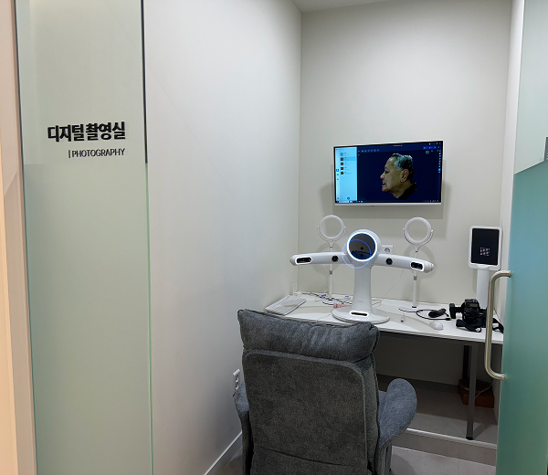

상악구치부(어금니)볼쪽으로
뼈이식할 통로를 만듬
상악 잇몸뼈가 부족한 경우 상악동을 들어올려
임플란트 식립 공간을 확보합니다
<%=m_client_en%>
임플란트를 심어줄 공간을 만들다
노화에 의해 치조골이 소실되었거나 치아를 발치한 후 오랜 시간이 지나
점점 밑으로 내려앉은 분들은 상악동 거상술이라는 술식을 통해 치료가 가능합니다.


"상악동"은 "상악" + "동" 의 합성어입니다.
즉 "위턱(상악)"에 있는 "비어있는 공간(동)"이라는 뜻으로
얼굴에 있는 몇 개의 부비동 중 하나로 코 주변에 있는
빈 공간중 하나를 의미합니다.
상악동 바닥과 잇몸뼈가 연결되어 있는데,
상악동 거상술은 말 그대로 상악동 바닥을 올려주는 것으로
그 아래 뼈를 이식해 임플란트를 심을 수 있는
뼈를 만들어 낼 수 있습니다.


상악구치부(어금니)볼쪽으로
뼈이식할 통로를 만듬

조그만 창문으로 수술기구를 사용해
상악동의 얇은막을 들어올림

들어 올린 빈 공간에 환자분의
상태에 맞는 뼈를 이식함

적절한 식립시기에 맞춰
안전하게 임플란트를식립함
빈 공간인 상악동의 경계를 둘러싸고 있는 계란껍질처럼 얇은 막이 존재하며
이 막은 위턱 잇몸뼈의 안쪽을 덮고 있습니다. 이 얇은 막을 찢고 상악동을 관통하여
임플란트를 식립하게 되면 상악동 천공으로 인한 문제가 발생할 수 있습니다.


상악동의 특별한 구조 때문에 임플란트를 식립하는 일은 아래턱보다 더
고난이도 수술 노하우를 필요로 합니다.
상악동에 임플란트를 식립하는 노하우가 부족하면 천공이나
임플란트 불안착으로 재수술을 받아야 합니다.

치아 위
어금니가 빠진지
오래된 분
위턱 어금니에 장기간
틀니를 장착하여 뼈가
많이 흡수된 분
심한 치주염으로
위 어금니를
발치한 분
상악동이 많이 내려와
뼈의 공간이
부족한 분